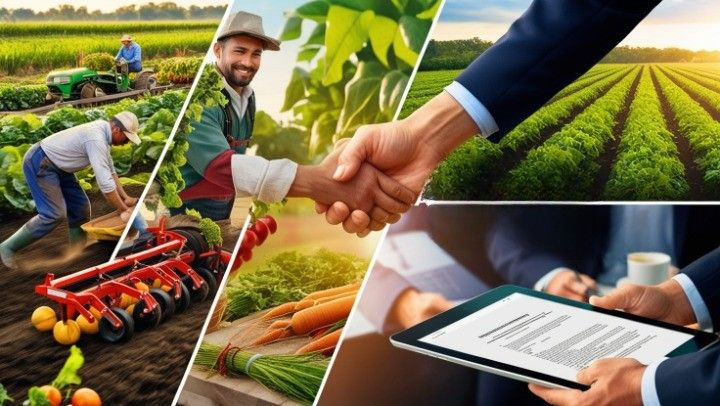

22 Juillet 2026
Accord historique avec l'Union Européenne pour l'export bio
AGRI-TOGO signe un accord cadre avec la Direction Générale de l'Agriculture de l'Union Européenne pour l'exportation de nos produits certifiés biologiques vers les marchés de France, Allemagne et Belgique. Ce partenariat ouvre de nouvelles perspectives pour nos 184 familles productrices avec des tarifs préférentiels et un accompagnement technique pour la certification bio.
En savoir plus